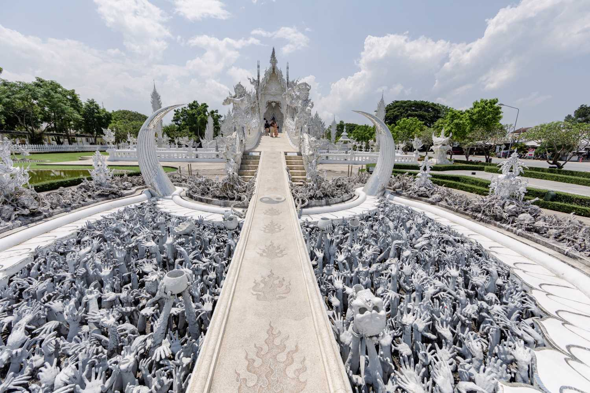

วัดร่องขุ่น เป็นวัดพุทธ ตั้งอยู่ในอำเภอเมืองเชียงราย จังหวัดเชียงราย ออกแบบและก่อสร้างโดย เฉลิมชัย โฆษิตพิพัฒน์ ตั้งแต่ พ.ศ. 2540 จนถึงปัจจุบัน โดยเฉลิมชัยคาดว่างานก่อสร้างวัดร่องขุ่นจะไม่เสร็จลงภายในช่วงชีวิตของตน[1] วัดร่องขุ่นถอดแบบมาจากวัดมิ่งเมือง จังหวัดน่าน
เมื่อวันที่ 5 พฤษภาคม พ.ศ. 2557 เวลา 18.05 น. เกิดแผ่นดินไหวขนาด 6.3 มีศูนย์กลางอยู่ที่อำเภอแม่ลาว จังหวัดเชียงราย และแผ่นดินไหวตามหลายครั้ง สร้างความเสียหายให้กับวัดร่องขุ่นเป็นอย่างมาก เช่น ผนังโบสถ์ปูนกระเทาะออก กระเบื้องหลุด ยอดพระธาตุหัก ภาพเขียนเสียหายหมด ทำให้ต้องปิดวัดเพื่อซ่อมแซมตั้งแต่วันที่ 6 พฤษภาคม ปีเดียวกัน
